Instituto Federal de Minas Gerais
Campus Ouro Preto. Braço de formação tecnológica aplicada e de experimentação técnica; sede do CIPER, em terreno da União no seu campus.
Ouro Preto · Minas Gerais · Brasil
O Centro de Inovação e Pesquisa de Energias Renováveis de Ouro Preto (CIPER) é uma parceria estratégica para converter o legado da mineração em conhecimento, energia limpa e novas oportunidades para a região.
O que é o CIPER
O CIPER não é uma terceira universidade, nem um segundo instituto federal, nem mais uma fundação. É um catalisador que une quem já faz ciência em Ouro Preto.
O foco é a sinergia institucional: usar a expertise histórica de Ouro Preto em mineração e metalurgia para acelerar a transição à economia verde, fortalecer a pesquisa da Fundação Gorceix, da UFOP e do IFMG e servir à comunidade com o apoio da Prefeitura — preenchendo uma lacuna na inovação em energias renováveis e na preservação das nascentes do Rio Doce e do Rio das Velhas, que ficam em Ouro Preto.
Da “economia de exaustão” à “economia do conhecimento”.
O Centro será implantado no campus do IFMG, na Zona de Desenvolvimento Educacional (ZDE) do Morro do Cruzeiro, entre os campi da UFOP e do IFMG.
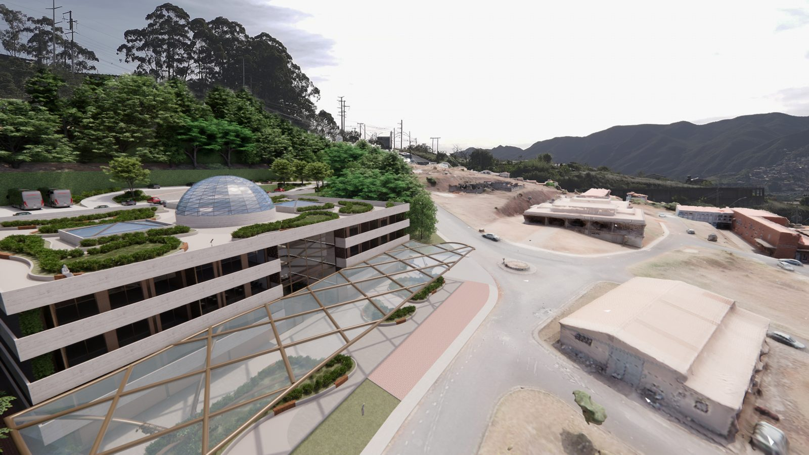
Metas do projeto
Metas do documento “Objetivos, Estratégias e Metas” (dezembro de 2025) e do Dossiê Executivo (fevereiro de 2026).
Aliança quadripartite
Cada parceiro entra com a sua vocação natural. O Comitê Gestor Quadripartite reúne as quatro.
Campus Ouro Preto. Braço de formação tecnológica aplicada e de experimentação técnica; sede do CIPER, em terreno da União no seu campus.
Excelência em pesquisa básica e avançada e capital humano de alto nível, com a tradição da Escola de Minas (1876) e da Escola de Farmácia (1839).
Liderança científica e execução técnica, financeira e operacional: a ponte com o setor privado e a agilidade administrativa.
Articulação legislativa, políticas públicas e apoio institucional para a transição econômica da cidade.
Instâncias de aprovação patrimonial e de cessão de uso do terreno: IPHAN e SPU (Secretaria de Patrimônio da União).
Três pilares · quinze objetivos
Gerar conhecimento, formar pessoas e transformar a economia regional. Cada objetivo tem estratégia e meta próprias.
Gerar conhecimento e tecnologia de ponta em energias limpas.
Formar o capital humano do futuro, em todos os níveis.
Programa Portas Abertas: 40% da capacidade do museu e dos laboratórios didáticos reservada à rede pública de Ouro Preto e região.
Diversificar a economia e engajar a comunidade.
60 eventos comunitários em 5 anos e um conselho consultivo comunitário de 15 membros.
Projeto arquitetônico
O edifício segue as curvas do Morro do Cruzeiro, dialoga com o conjunto histórico e é, ele mesmo, um laboratório de sustentabilidade.
| Local | Zona de Desenvolvimento Educacional (ZDE), campus do IFMG, entre a portaria principal do IFMG e a portaria de acesso à UFOP |
| Área total | 9.000,80 m² (projeto de 10/12/2024) |
| Uso | Inovação, pesquisa em energias renováveis e sustentabilidade ambiental, econômica e social |
| Espaços | Laboratórios de pesquisa e inovação, laboratórios interativos, Museu Interativo de Ciência, Planetário, Pêndulo de Foucault, auditórios, biblioteca científica, espaço gastronômico sustentável |
| Materiais | Aço carbono A36, aço inox A304, tijolo à vista, vidro temperado e pedra |
| Sustentabilidade | Painéis solares, reúso de água da chuva, jardim suspenso com espécies da Mata Atlântica, meta LEED Ouro |
| Acessibilidade | Rampas, elevadores e caminhos sinalizados em todos os níveis |
| Método | BIM 5D (geometria, tempo e custo) com gêmeo digital entregue ao IFMG |
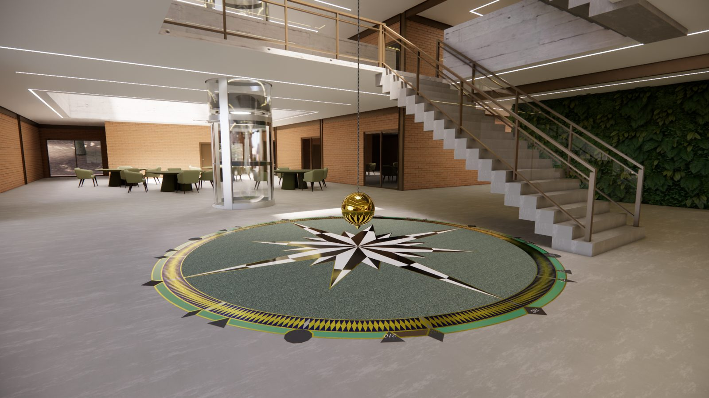
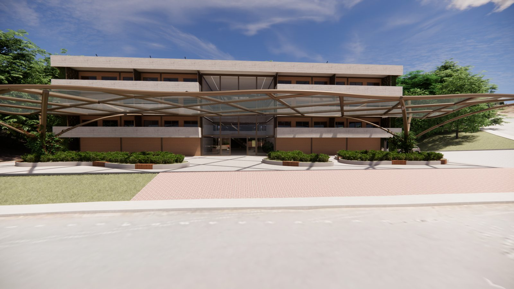
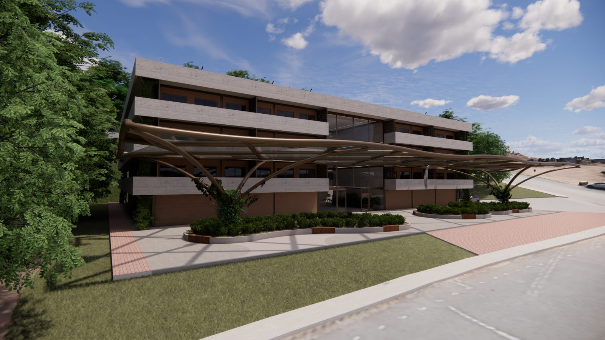
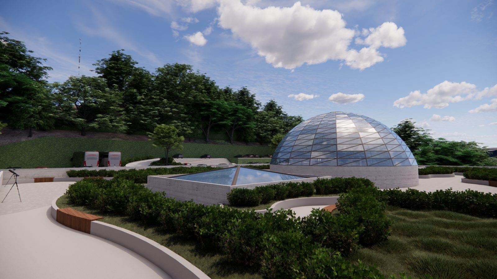
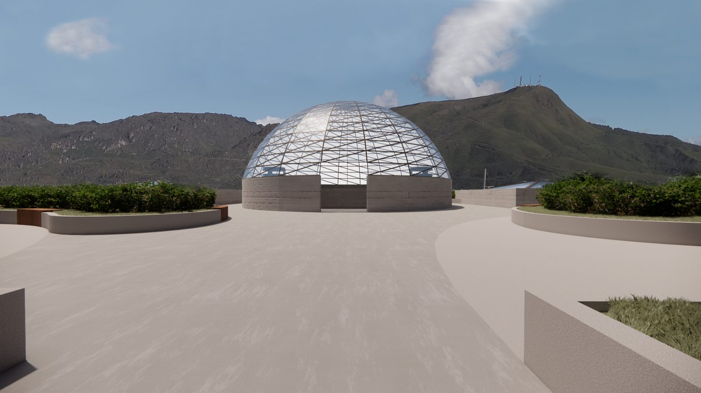
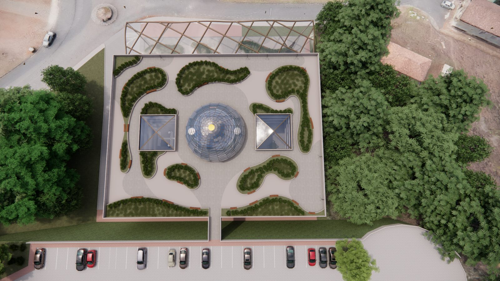
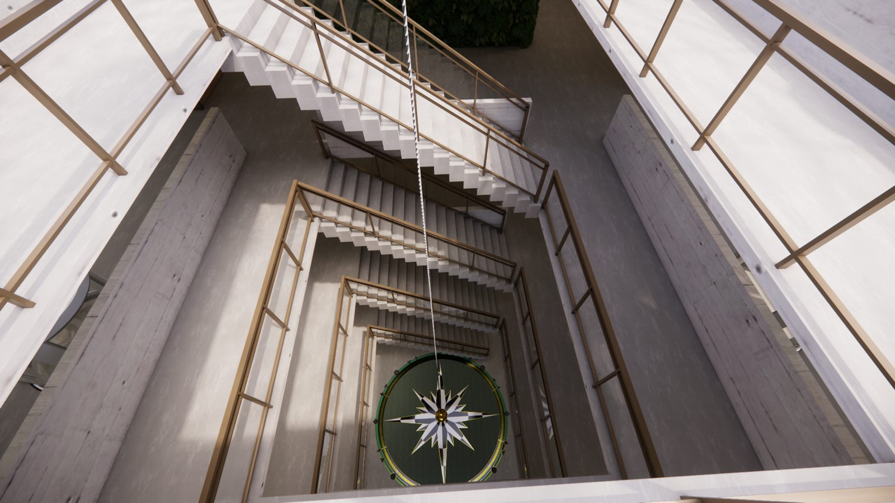
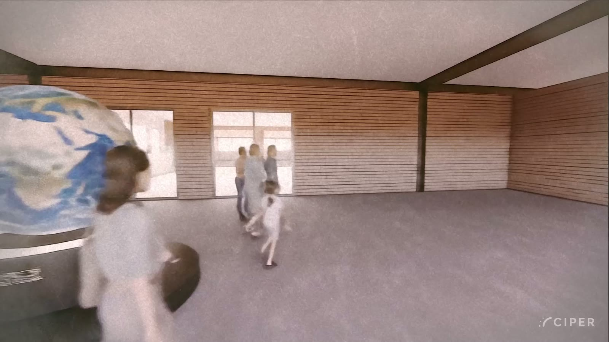
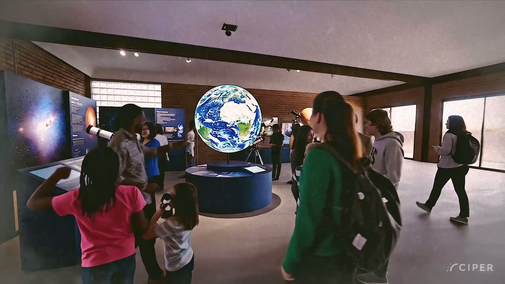
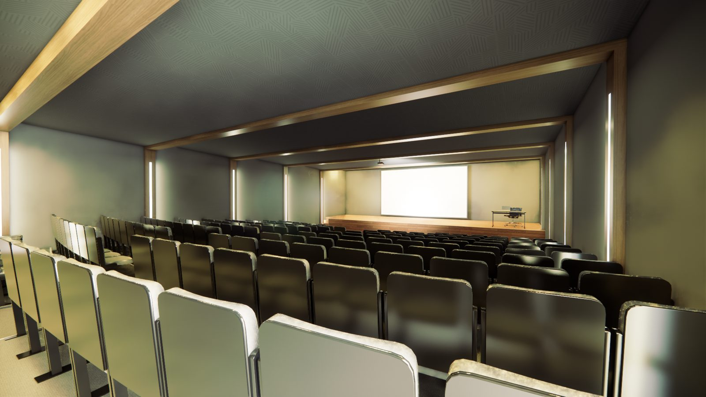
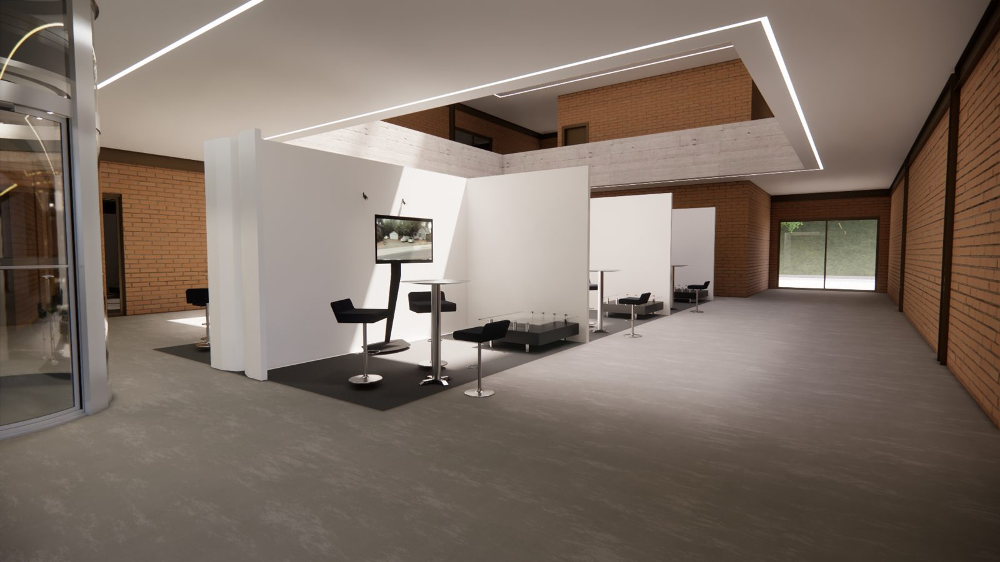
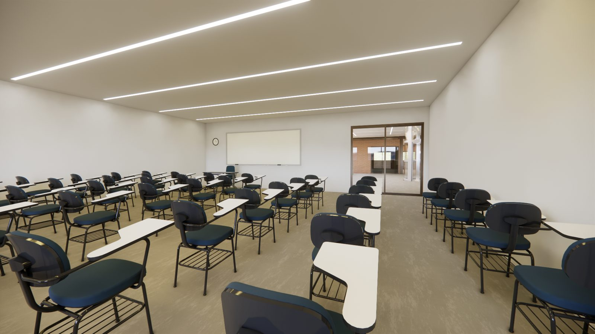
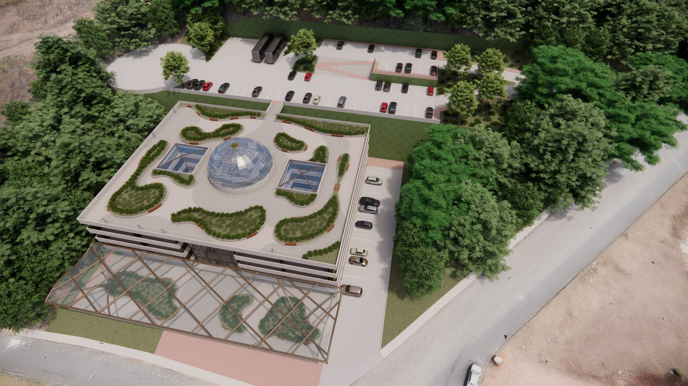
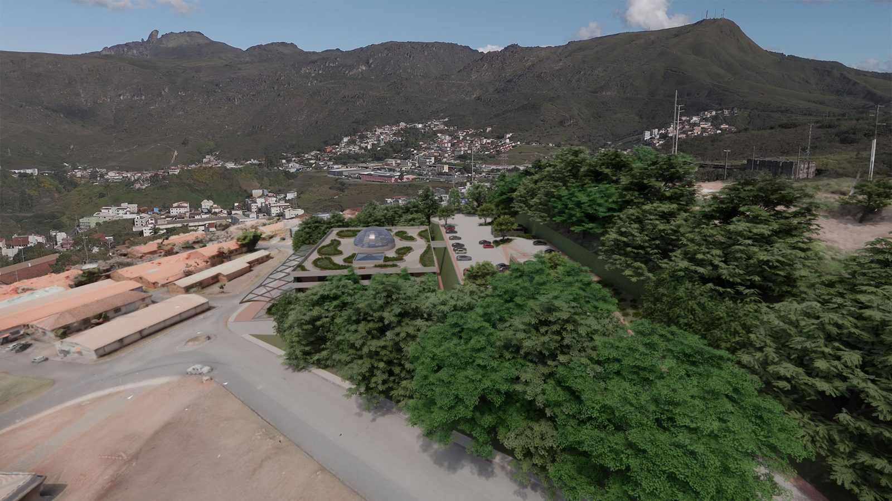
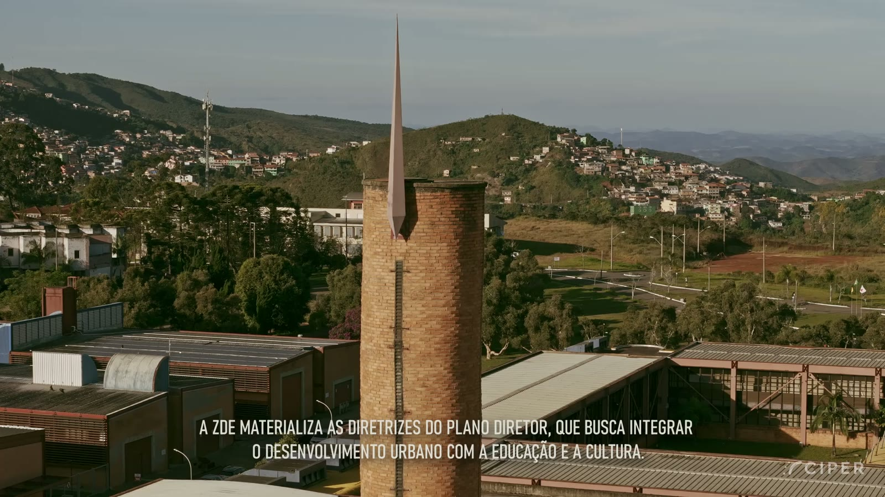
Vídeo institucional
Em 9 minutos: a corrida do ouro, a vocação educacional de Ouro Preto, a ZDE do Morro do Cruzeiro e o passeio pelo edifício do CIPER.
Arquitetura que ensina, história que inspira, educação que transforma.
Roteiro: Ernani Carlos de Araujo, Julio Cesar Silva Azevedo, Lídia Barbosa, Matheus Garcia e Pablo Morais · 3D, archviz e produção audiovisual: Studio lap.s · Imagens aéreas: Vellozia Filmes · Narração, edição e mixagem: Pablo Morais · Outubro de 2025.
CIPER e Parque Tecnológico
O CIPER é o “celeiro” onde ideias, pesquisas, patentes e talentos são cultivados; o Parque Tecnológico da Fundação Gorceix é a “plataforma de consolidação” onde viram negócios. Um alimenta o outro.
| Característica | Parque Tecnológico (modelo tradicional) | Hub colaborativo CIPER |
|---|---|---|
| Foco principal | Produção e escala industrial de empresas de base tecnológica consolidadas. | Pesquisa, desenvolvimento e formação de capital humano em estágio inicial e pré-competitivo. |
| Natureza | Complexo produtivo e imobiliário que abriga empresas. | Ecossistema de colaboração que conecta e potencializa instituições existentes. |
| Principal ativo | Infraestrutura física e logística para atração de grandes corporações. | Densidade de capital intelectual e sinergia entre pesquisadores e estudantes. |
| Estágio na cadeia | Topo: industrialização e acesso ao mercado. | Base: geração de conhecimento, ideias e talentos. |
Governança
Três instrumentos sustentam a gestão: a Matriz RACI, o Manual de Governança e a Ata de Fundação do Comitê Gestor Quadripartite.
UFOP, IFMG e FG: liderança técnica na pesquisa aplicada e na formação de massa crítica.
PMOP: articulação legislativa, apoio institucional na ZDE e capacitação de professores.
Fundação Gorceix: execução técnico-operacional, gestão financeira e cronograma das obras.
IPHAN e SPU: licenciamento patrimonial e uso do terreno da União.
| Atividade | FG | UFOP | IFMG | PMOP | IPHAN / SPU |
|---|---|---|---|---|---|
| Regularização do terreno | R | C | R/A | C | A |
| Aprovação do projeto arquitetônico | R | C | C | R | A |
| Licenciamento patrimonial | R | I | I | R | A |
| Projeto de engenharia e materiais | R/A | C | C | I | C |
| Certificação LEED Ouro | R/A | C | C | I | I |
| Fundações e estrutura | R/A | I | I | I | I |
R responsável (executa) · A autoridade (aprova) · C consultado · I informado. Fonte: Dossiê Executivo, fevereiro de 2026.
Painel público de indicadores (captação, obras, massa crítica e ESG) e auditoria anual dos investimentos.
Cotas Ouro (edifício), Alumínio (laboratórios) e Ferro (museu, planetário e bolsas), só para empresas com metas comprovadas de descarbonização.
Lei de Inovação para o compartilhamento de infraestrutura pública; cessão de uso junto à SPU; defesa arquitetônica junto ao IPHAN.
Roteiro
Validação do projeto com as instituições, Dossiê Executivo e captação dos recursos iniciais.
Execução do projeto arquitetônico sustentável e formação das equipes iniciais de pesquisa e gestão.
Inauguração e início dos programas de P&D, Ensino e Extensão. Meta: as 5 primeiras patentes.
Metas de visitação, empregos e startups; certificação LEED Ouro e 3 parcerias internacionais.
| Marco | Entrega técnica | % do valor | Prazo |
|---|---|---|---|
| M1 · Mobilização | Levantamentos topográficos, sondagens e canteiro | 15% | Mês 1 |
| M2 · Fundações | Fundações e infraestrutura enterrada | 20% | Mês 3 |
| M3 · Superestrutura | Estrutura metálica e fechamentos externos | 30% | Mês 6 |
| M4 · Instalações | Redes elétricas, hidráulicas, H2V e climatização | 20% | Mês 9 |
| M5 · Acabamentos | Equipamentos, laboratórios e paisagismo | 10% | Mês 11 |
| M6 · Comissionamento | Testes finais, certificação LEED e entrega | 5% | Mês 12 |
Fundo de contingência de 12% sobre o valor da obra para absorver oscilações de insumos como aço e vidro.
Construção coletiva
A proposta vem sendo apresentada às instituições parceiras e ajustada a cada escuta.
Capital humano e massa crítica
Professores, pesquisadores e servidores técnicos da UFOP, do IFMG e de seus parceiros formam uma das maiores concentrações de doutores do país em geociências e engenharia de materiais.
O Banco de Capital Humano organiza esse mapa — quem é, onde está, em que área atua e com quais eixos do CIPER tem afinidade — e recebe a adesão de quem quiser participar.
Primeira carga: dados públicos dos sites oficiais das unidades, coletados em 9 de novembro de 2026.
Documentos